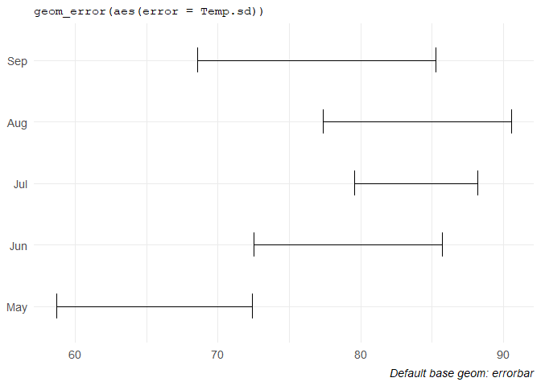
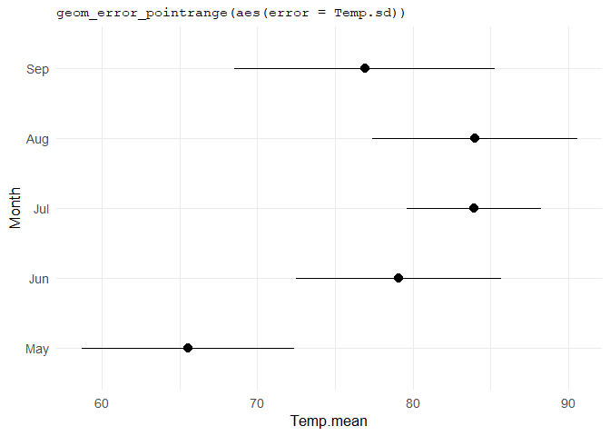
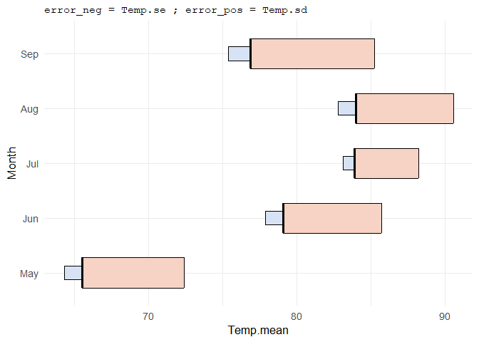
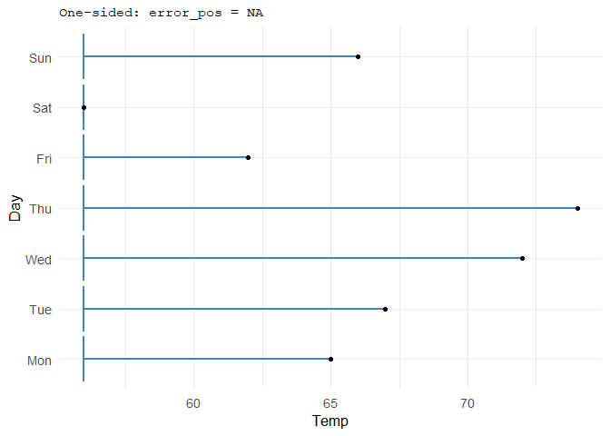
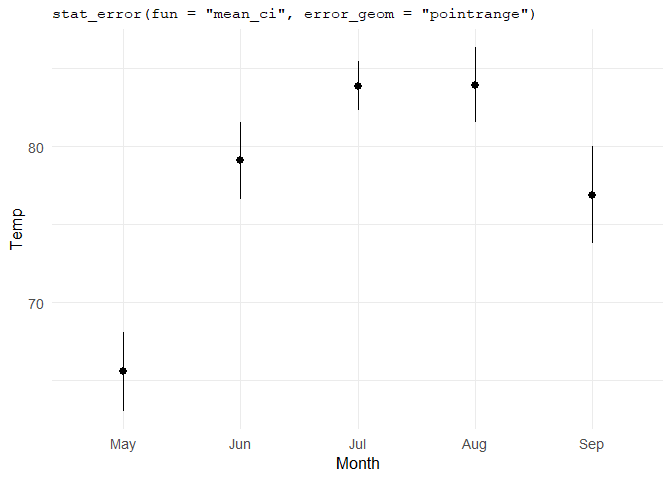
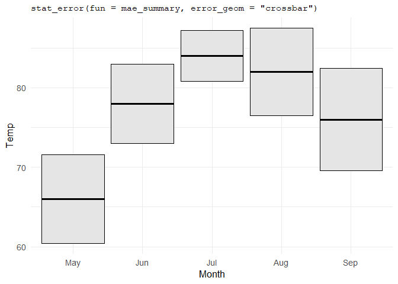
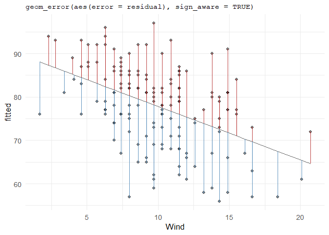

ggerror extends ggplot2’s error geoms with one error-focused API. Pass error for symmetric errors, or error_neg and error_pos for asymmetric and one-sided cases. ggerror infers orientation and lets you style each side independently. It computes summaries from raw data with stat_error(), and draws signed quantities such as residuals with sign_aware.
TL;DR:
- One aesthetic for the common symmetric case:
aes(error = ...) - Asymmetric and one-sided bars with
error_neganderror_pos - Per-side styling through
colour_neg,width_pos,linetype_neg, and more - Choice of
errorbar,linerange,crossbar, orpointrange - Summary layers from raw data with
stat_error() - Signed residual-style bars with
sign_aware = TRUE
Installation
# Install the stable release from CRAN:
install.packages("ggerror") # 0.3.0
# Or install the development version from GitHub:
pak::pak("iamyannc/ggerror") # 1.0.0Setup
The examples below use airquality, the same dataset used throughout the package vignettes. For convenience I defined a theme, and did minimal data processing on the original dataset.
library(ggplot2)
library(ggerror)
theme_set(
theme_minimal(base_size = 13) +
theme(
plot.title = element_text(family = "mono", size = 11, hjust = 0),
plot.caption = element_text(face = "italic"),
legend.position = "none"
)
)
aq <- airquality
aq$Month <- factor(aq$Month, labels = month.abb[5:9])
# A function to transform numbered day (1-31) to name, given the year & month (1973, May - Sep)
day_in_month <- function(day_in_month, month, year) {
days_abbr <- format(
as.Date(sprintf("%d-%02d-%02d", year, month, day_in_month)),
"%a"
)
factor(days_abbr,
levels = c("Mon", "Tue", "Wed", "Thu", "Fri", "Sat", "Sun"),
ordered = TRUE)
}
aq$Day <- day_in_month(aq$Day, airquality$Month, 1973)
# Computing some centrality/spread measures with base R!
aq_monthly_avg <- aggregate(
Temp ~ Month,
data = aq,
FUN = function(x) c(
mean = mean(x),
sd = sd(x),
se = sd(x) / sqrt(length(x))
)
)
aq_monthly_avg <- do.call(data.frame, aq_monthly_avg)Simple defaults
The usual case is a symmetric error around some central value.
ggplot(aq_monthly_avg, aes(Temp.mean, Month)) +
geom_error(aes(error = Temp.sd), width = 0.4) +
labs(x=NULL, y=NULL,
title = "geom_error(aes(error = Temp.sd))",
caption = "Default base geom: errorbar"
)
If you want a specific error geom (4 available, see below), either pick it with error_geom = ... or use the pinned wrappers.
ggplot(aq_monthly_avg, aes(Temp.mean, Month)) +
geom_error_pointrange(aes(error = Temp.sd), size = 0.7) +
labs(title = "geom_error_pointrange(aes(error = Temp.sd))")
Asymmetric and one-sided errors
error_neg and error_pos extend in opposite directions. That makes it easy to show genuinely different quantities on each side, or to suppress one side entirely with NA.
ggplot(aq_monthly_avg, aes(Temp.mean, Month)) +
geom_error(
aes(error_neg = Temp.se, error_pos = Temp.sd),
error_geom = "crossbar",
fill_neg = "#d7e3f4",
fill_pos = "#f6d3c4",
width_neg = 0.25,
width_pos = 0.55
) +
labs(title = "error_neg = Temp.se ; error_pos = Temp.sd")
# Grabbing only the first week in the data and computing for each Temp, its distance from the minimum Temp and maximum Temp.
week_may <- subset(aq, Month == "May")[1:7, ]
week_may$dist2min <- week_may$Temp - min(week_may$Temp, na.rm = TRUE)
week_may$dist2max <- max(week_may$Temp, na.rm = TRUE) - week_may$Temp
ggplot(week_may, aes(Temp, Day)) +
geom_error(
aes(error_neg = dist2min, error_pos = NA),
colour = "steelblue",
linewidth = 1
) +
geom_point(size = 1.5) +
labs(title = "One-sided: error_pos = NA")
Summaries from raw data with stat_error()
When you do not want to pre-compute the bounds yourself, stat_error() computes them directly and supports default and custom functions.
ggplot(aq, aes(Month, Temp)) +
stat_error(fun = "mean_ci", error_geom = "pointrange") +
labs(title = 'stat_error(fun = "mean_ci", error_geom = "pointrange")')
# [1] `stat_error()` using fun = "mean_ci" and conf.int = 0.95.Custom summary functions work too, as long as they return data frames of one row with y, ymin, and ymax columns:
mae_summary <- function(x, scale_by = 1) {
md <- median(x)
mae <- mean(abs(x - md)) * scale_by
data.frame(y = md, ymin = md - mae, ymax = md + mae)
}
ggplot(aq, aes(Month, Temp)) +
stat_error(fun = mae_summary, error_geom = "crossbar", fill = "grey90") +
labs(title = "stat_error(fun = mae_summary, error_geom = \"crossbar\")")
Signed quantities with sign_aware
For residual plots and other signed magnitudes, sign_aware = TRUE assigns positive and negative values automatically:
# Residual plot made easy
fit_temp <- lm(Temp ~ Wind, data = aq)
aq_fit <- data.frame(
Wind = aq$Wind,
Temp = aq$Temp,
fitted = predict(fit_temp),
residual = resid(fit_temp)
)
ggplot(aq_fit, aes(Wind, fitted)) +
geom_line(linewidth = 0.4, colour = "grey40") +
geom_point(aes(y = Temp), alpha = 0.45) +
geom_error(
aes(error = residual),
sign_aware = TRUE,
orientation = "x",
colour_pos = "firebrick",
colour_neg = "steelblue",
linewidth = 0.5,
alpha = 0.85
) +
labs(title = "geom_error(aes(error = residual), sign_aware = TRUE)")
Supported geoms
| ggplot2 base | geom_error(error_geom = ...) |
Pinned wrapper |
|---|---|---|
geom_errorbar |
"errorbar" (default) |
geom_error() |
geom_linerange |
"linerange" |
geom_error_linerange() |
geom_pointrange |
"pointrange" |
geom_error_pointrange() |
geom_crossbar |
"crossbar" |
geom_error_crossbar() |
Learn more
I tried to be as comprehensive as possible, without taking too much of your attention. For the full walkthroughs, see the package vignettes:
-
vignette("ggerror"): simple defaults, asymmetric bars, one-sided bars -
vignette("use-cases"):stat_error(), custom summaries, andsign_aware
Disclaimer
This package was developed with the assistance of AI tools. All code has been reviewed by the author, who remains responsible for its quality. Ideas for new geoms are welcome and features are very welcome.
Thank you for reading, forget everything and give me your best cookies recipe 🍪
Yann :)